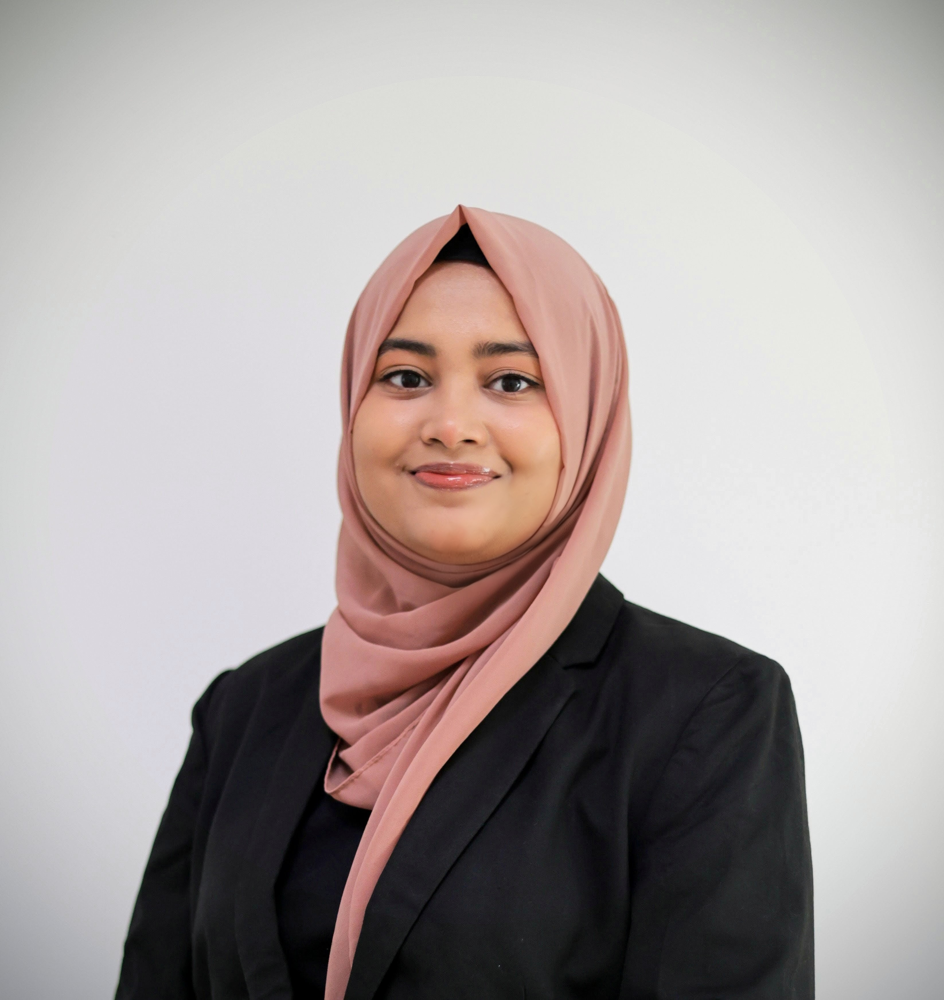

I am a Full-Stack Data Scientist with 4+ years of experience in FinTech and AI consultancy, specialising in NLP, RAG pipelines, fraud detection, multi-agent systems, and MLOps. I build production-grade ML systems that drive real business impact.
Full-stack data scientist with 4+ years of FinTech and consultancy experience, specialising in NLP, RAG pipelines, fraud detection, transaction monitoring, OCR, speech-to-text, time-series forecasting, and MLOps.
Skilled in building production-grade ML models and cloud-based AI solutions that drive data-driven business impact. Successfully delivered POCs, RAG chatbots, and agentic systems, contributing to major client wins. Awarded Core Value Member 2024 for contributions in applied AI innovation.
Recently completed my Master's thesis at Fraunhofer FOKUS, researched the integration of structured knowledge bases into LLaMA's transformer attention mechanisms using a KBLAM-inspired architecture.
The work focuses on injecting structured knowledge entries directly into attention layers — enabling improved reasoning and open-ended QA without the latency overhead of traditional retrieval pipelines.
A study of real-world structural knowledge base integration methods in KBLAM and their impact on LLM response performance. Fine-tuned a LLaMA-based model injecting structured knowledge directly into transformer attention layers.
State-of-the-art Bengali speech recognition trained on 400 hours of Common Voice audio. Ranked 6th out of 59 teams at the BUET CSE Fest 2022 Deep Learning Sprint.
Web application designed to predict the likelihood of stroke based on patient health indicators, with model explainability via Dalex.
Combined CNN and BERT models to classify vaccine-related tweets as Positive, Negative, or Neutral using the Covid-19 Vaccine Tweets with Sentiment Annotation dataset.
Fine-tuned a T5 transformer for Bengali punctuation restoration using a Seq2Seq architecture. Achieves robust restoration performance on Bengali text corpora.
Image classifier built from scratch in PyTorch to classify cats and dogs. Includes full data preprocessing pipeline, custom training loop, and evaluation metrics.
Add your LinkedIn recommendations here. Ask your manager or colleagues at Publicis Sapient for a recommendation and paste the text into this card.
To request recommendations: go to your LinkedIn profile → scroll to Recommendations → click Ask for a recommendation. Then paste the text here.
Thesis at Fraunhofer FOKUS: Integrating structured knowledge bases into LLaMA transformer attention mechanisms (KBLAM-inspired architecture) to improve open-ended question answering and multi-hop reasoning without retrieval overhead.
Awarded for outstanding contributions in applied AI innovation and delivery excellence across client projects.